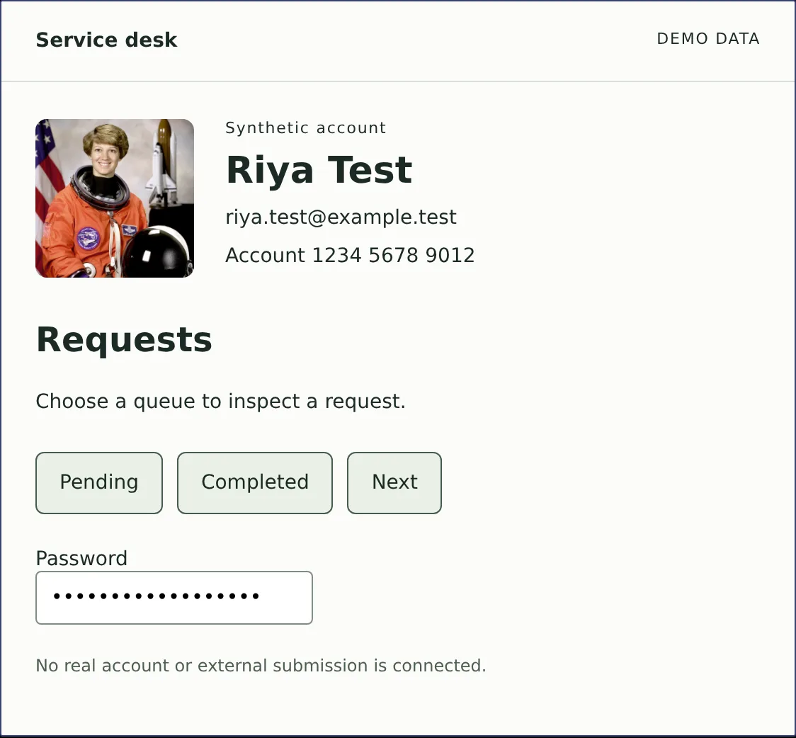
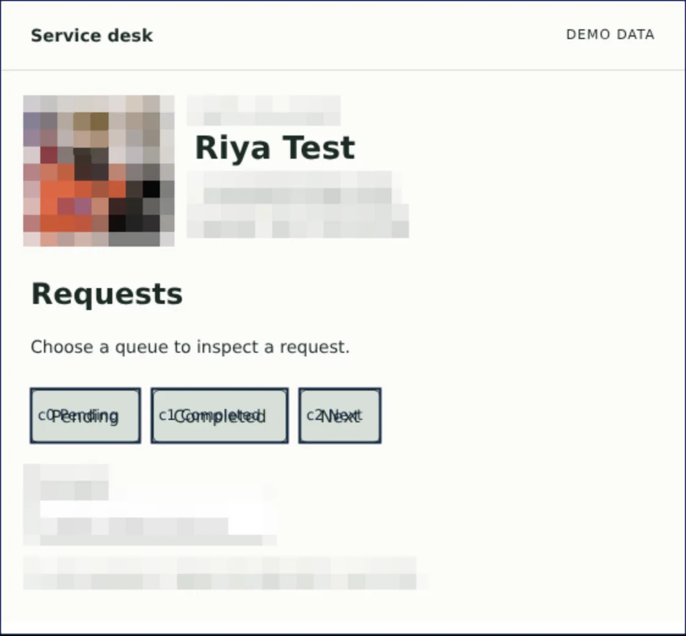

SIH26171 · On-device visual perception
Your screen.
Your boundary.
Dhristi lets a browser agent understand what is on your screen without sending your screen anywhere. Faces, personal details and form values stay on your device. The agent only sees the layout it needs to help.
Agents need to see.
You need privacy.
AI browser agents can fill forms and move through websites for you. To do that, most of them send a screenshot of your screen to a model in the cloud.
That screenshot holds whatever you had open: your name, your email, account numbers, photos. Dhristi keeps those on your computer and gives the agent a protected outline of the page instead.
How it works
Four steps. Your details never leave.
- 01
See
Dhristi reads the page and its controls right in your browser.
- 02
Protect
A model on your own computer finds names, emails, numbers and faces, and swaps each one for a placeholder.
- 03
Plan
A larger AI model in the cloud plans the next step. It only ever sees placeholders like
EMAIL#1. - 04
Act
Your browser checks the plan, puts your real details back in locally, and asks you first before anything risky.


Screens from the working prototype, using a synthetic demo account.
See it working
The prototype, recorded live.
The privacy boundary
What stays. What leaves.
Stays on your device
- Screenshots and pixels
- Names, emails and field values
- Photos and faces
- Web addresses and free text
Sent to the cloud planner
- Which buttons and fields exist
- Where they sit on the page
- Placeholders such as
EMAIL#1instead of real values
A smaller view is not a guarantee of anonymity: the layout of a page can still reveal something about it.
Smart India Hackathon 2026
Built for SIH26171.
ISRO's problem statement asks for on-device visual perception for lightweight browser agents. Dhristi is our answer: seeing the page and removing personal details happen on your device, and only the protected result goes to a cloud model for planning.
Dhristi is a student engineering prototype. It is not a released product.
Read the problem statementRV University · B.Tech CSE
The team.
Gopreet
API and persistence
Hiranmayi
UX and accessibility
Varun
Core implementation
Koushaik
Testing and reliability
Francis
Integration and pitch
Niharika
Research and narrative